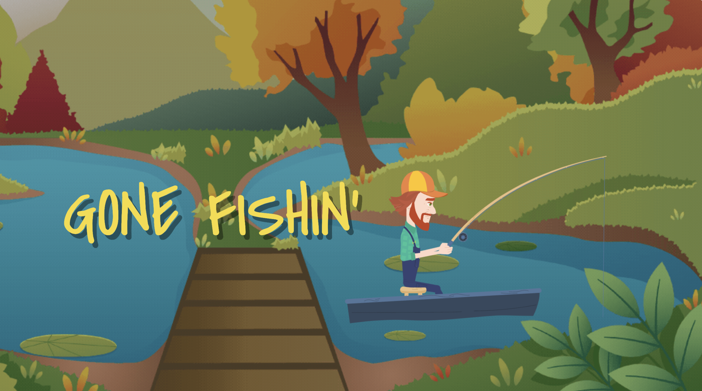

<!DOCTYPE html>
<html>
<head>
    <meta charset="UTF-8" />
    <title>My experiment</title>
    <script src="https://unpkg.com/jspsych@7.3.4"></script>
    <script src="https://unpkg.com/@jspsych/plugin-html-keyboard-response@1.1.3"></script>
    <script src="https://unpkg.com/@jspsych/plugin-html-button-response@1.1.3"></script>
    <script src="https://unpkg.com/@jspsych/plugin-preload@1.1.3"></script>
    <script src="https://unpkg.com/@jspsych/plugin-video-button-response@1.1.3"></script>
    <script src="https://unpkg.com/@jspsych/plugin-video-slider-response@1.1.3"></script>
    <script src="https://unpkg.com/@jspsych/plugin-image-button-response@1.2.0"></script>
    <script src="https://unpkg.com/@jspsych/plugin-html-button-response@1.2.0"></script> 
    <script src="https://unpkg.com/@jspsych/plugin-html-slider-response@1.1.3"></script>
    <script src="https://unpkg.com/@jspsych/plugin-video-keyboard-response@1.1.3"></script>
    <link href= "https://unpkg.com/jspsych@7.3.4/css/jspsych.css" rel="stylesheet" type="text/css" />
    <style> 
    body {background-color: rgb(74, 166, 164);}
    p {color: white;}
    /*
    .container {
            width: 100%;
            max-width: 1000px;
            margin: 0 auto; // Center the container 
            text-align: center; //Center the image within the container 
    }

    .container img {
            width: 100%; //Scale the image to fit the container width 
            height: auto; // Maintain the aspect ratio 
    
    }

    .button-container {
            display: flex;
            justify-content: center; // Center horizontally 
            align-items: center; // Center vertically 
            height: calc(100vh-10px); // Full height of the viewport 
            margin-top: 10px; 
    }
    
    */

    .jspsych-btn2 {
            background-color: lightblue; 
            color: black;  
            border: none; 
            padding: 10px 20px; 
            font-size: 30px; 
            cursor: pointer; 
    }
    
    .custom-button {
            background-color: lightblue;
            font-size: 30px;
            border: none;
            position: absolute;
            left: 500px;
            top: 600px;
        }

    </style>
</head>
<body> </body>
<script> 
    const jsPsych = initJsPsych(); //initialize jsPsych
    
    var preload = {
        type: jsPsychPreload, 
        auto_preload: true
    };

    var timeline = []; //create empty timeline 

    const cover_screen = {
        type: jsPsychHtmlButtonResponse, 
        stimulus: ``,
        choices: ['Continue'], 
        button_html: ['<button class="jspsych-btn" style = "background-color:lightblue; font-size:30px; border:none;">%choice%</button>'],

    }
    timeline.push(cover_screen); 

    var instructions = {
        type: jsPsychVideoButtonResponse, 
        stimulus: ['video/updated_instructions.mp4'], 
        choices: ['Continue', 'Review Instructions'], 
        response_allowed_while_playing: false, 
        width: 800, 
        height: 450,
        on_finish: function(data) {
            jsPsych.data.addDataToLastTrial({
                review: data.response == 1
            }); 
        }
    };

    var loop_instructions = {
        timeline: [instructions], 
        loop_function: function(data) {
            var last_trial = data.values().slice(-1)[0]; 
            return last_trial.review; 
        }
    }; 

    timeline.push(loop_instructions);  

    /* Using timeline variables to display game content */ 
    
    //temp modify this for testing purposes: should be 8 red and 2 blue 

    var numRedVideos = 8; 
    var numBlueVideos = 2; 

    function generateTestStimuli(numRed, numBlue) {
        var stimuli = []; 
        for (var i=0; i<numRed; i++) {
            stimuli.push({stimulus : ['video/Red_vid.mp4'], color: 'red'} ); 
        }
        for (var j=0; j<numBlue; j++) {
            stimuli.push({stimulus: ['video/Blue_vid.mp4'], color: 'blue'} ); 
        }
        return stimuli; 
    }

    var test_stimuli =  generateTestStimuli(numRedVideos, numBlueVideos); 

    var caughtFish = []; //array with paths to PNG images of the fish caught so far 
    var lastColor; //global var to store colour information 
    var correctnessTag; 
    var trialCounter = 0; 

    function getOverlayHTML() {
        return caughtFish.map((fish, index) => ``).join('');
    }

    /*
    var fixation = { //fixation cross 
        type: jsPsychHtmlKeyboardResponse, 
        stimulus: '<div style= "font-size:60px;" >+</div>', 
        choices: "NO_KEYS", 
        trial_duration: 1000, //this can be changed 
    }; 
    */ 

    //Video presentation -> videos need to be edited a little bit to accomodate for this 
    var video = {  //this isn't even the right video ARGHGHGHG -> Edit video to make sure the past fish are NOT showing 
        type: jsPsychVideoKeyboardResponse,  
        stimulus: jsPsych.timelineVariable('stimulus'), 
        choices: "NO_KEYS", 
        trial_ends_after_video: true, 
        width: 800, 
        height: 450, 
        button_html: ['<button class="jspsych-btn" style = "background-color:lightblue; font-size:30px; border:none;">%choice%</button>', '<button class="jspsych-btn" style = "background-color:lightblue; font-size:30px; border:none;">%choice%</button>'],
        on_finish: function(data){
            trialCounter ++; 
            data.color = jsPsych.timelineVariable('color'); 
            if (data.color === 'red') { 
                lastColor = 'red'; 
            } else if (data.color === 'blue') {
                lastColor = 'blue'; 
            }
        }
    }; 

    // Helper function to get background image based on color
    function getBackgroundImage() {
        if (lastColor === 'red') {
            return 'img/Red_certainty.png';
        } else if (lastColor === 'blue') {
            return 'img/Blue_certainty.png';
        }
        return '';
    }

    var slider = { 
        type: jsPsychHtmlSliderResponse,
        stimulus: function() {
            var overlayHTML = getOverlayHTML();
            lastColor = jsPsych.timelineVariable('color');
            var backgroundImage = getBackgroundImage();
            return `
            <div>
                <p style="text-align: center;">What is the probability that the fish is from Pond A vs. Pond B?</p>
                <div style="position: relative; width: 800px; height: 450px; background-image: url('${backgroundImage}'); background-size: cover;">
                    <div style="position: absolute; top: 10px; left: 250px; display: flex;">
                        ${overlayHTML}
                    </div>
                </div>
            </div>
        `;
        },
        labels: ['100% Pond A', '75', '50% Pond A, 50% Pond B', '75', '100% Pond B'], 
        //prompt: '<p>What is the probability that the fish is from Pond A vs. Pond B?</p>', 
        on_finish: function(data) {
            data.color = jsPsych.timelineVariable('color');
        }
    };

    var confirmation = { //we want the fish overlay present here also!! 
        type: jsPsychHtmlButtonResponse, 
        stimulus: function() {
            var overlayHTML = getOverlayHTML();
            lastColor = jsPsych.timelineVariable('color');
            var backgroundImage = getBackgroundImage();
            return `
                <div class="container">
                <div style="position: relative; width: 800px; height: 450px; background-image: url('${backgroundImage}'); background-size: cover;">
                    <p style="font-size: 20px; text-align: center; position: relative; top: -35px;">Are you certain enough to decide which pond the fisherman is fishing from? </p>
                    <div style="position: absolute; top: 10px; left: 250px; display: flex;">
                        ${overlayHTML}
                </div>
                </div>
            `;
        },
        choices: ['Yes', 'No'], 
        data: {
            task: 'response' 
        }, 
        prompt: " ", //prompt is included in the stimulus 
        stimulus_height: 450, 
        stimulus_width: 800,
        button_html: ['<button class="jspsych-btn" style = "position:absolute; left:500px; top: 600px; background-color:lightblue; font-size:30px; border:none;">%choice%</button>', '<button class="jspsych-btn" style = "position:absolute; right:500px; top: 600px; background-color:lightblue; font-size:30px; border:none;">%choice%</button>'],
        /* Need to figure out how I can appropriately move the button to be beneath the image*/ 
        on_finish: function(){
            //put in a flag here to determine if they said yes or no or whatever 

        }
    }; 

    var confirmation_followup = { //this does not go in the timeline 
        type: jsPsychHtmlButtonResponse, 
        stimulus: function() {
            var overlayHTML = getOverlayHTML();
            lastColor = jsPsych.timelineVariable('color');
            var backgroundImage = getBackgroundImage();
            return `
                <div style="position: relative; width: 800px; height: 450px; background-image: url('${backgroundImage}'); background-size: cover;">
                    <p style="font-size: 20px; text-align: center; position: relative; top: -35px;">Which pond is the fisherman fishing from? </p>
                    <div style="position: absolute; top: 10px; left: 250px; display: flex;">
                        ${overlayHTML}
                    </div>
                </div>
            `;
        },
        choices: ['Pond A', 'Pond B'],
        //prompt: "<p>Which pond is the fisherman fishing from?</p>", 
        stimulus_height: 450,
        stimulus_width: 800, 
        button_html: ['<button class="jspsych-btn" style = "position:absolute; left:450px; top: 575px; background-color:lightblue; font-size:30px; border:none;">%choice%</button>', '<button class="jspsych-btn" style = "position:absolute; right:450px; top: 575px; background-color:lightblue; font-size:30px; border:none;">%choice%</button>'],
        on_finish: function(data){
            if (lastColor === 'red') { 
                    caughtFish.push('img/Red_fish.png'); 
                } else if (lastColor === 'blue') {
                    caughtFish.push('img/Blue_fish.png'); 
                }
            if (data.response == 0){ //if the user pressed 'pond A'
                correctnessTag = 'true'; 
            } else {
                correctnessTag = 'false'; 
            }
        }
    }; 

    var if_confirmation = { //this goes in the timeline 
        timeline: [confirmation_followup], 
        conditional_function: function() { //get data from prev trial 
            var data = jsPsych.data.get().last(1).values()[0]; 
            if (data.response === 0) { //assuming 'yes' is the first button 
                return true; 
            } else { 
                if (lastColor === 'red'){
                    caughtFish.push('img/Red_fish.png'); 
                } else if (lastColor === 'blue'){
                    caughtFish.push('img/Blue_fish.png'); 
                }
                correctnessTag = 'n/a'; 
                return false; 
            }
        }
    }; 

    var test_procedure = {
        timeline: [video, slider, confirmation, if_confirmation], 
        timeline_variables: test_stimuli, 
        randomize_order: true, //randomize the order that the fish are presented 
        repetitions: 1
    }; 

    timeline.push(test_procedure); 


    var concluding_video = {
        type: jsPsychVideoKeyboardResponse, 
        stimulus: function() {
            if (trialCounter == 10){ //only play the conclusion video after all trials have been executed 
                if (correctnessTag === 'true'){
                    return ['video/correct_response.mp4']; 
                } else if (correctnessTag === 'false'){
                    return ['video/incorrect_response.mp4']; 
                } else if (correctnessTag === 'n/a'){
                    return ['video/thank_you_vid.mp4']; 
                }
            }
        }, 
        choices: "NO_KEYS", 
        trial_ends_after_video: true, 
        width: 800, 
        height: 450
    }; 
    
    timeline.push(concluding_video); 

    jsPsych.run(timeline); 


</script> 
</html>